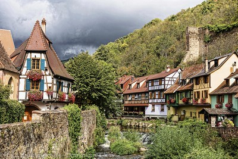

La route des vins d’Alsace : à la découverte des cépages alsaciens
La Route des Vins d’Alsace parcourt, entre la plaine du Rhin et les Ballons des Vosges, le vignoble millénaire d’Alsace. Elle serpente à mi-coteau sur près de 170 kilomètres de Thann au Sud à Marlenheim au Nord. Elle égrène un chapelet de villages pittoresques et fleuris, de cités viticoles réputées et offre de saisissants panoramas qui illustrent la richesse et la diversité des terroirs d’Alsace. Une belle occasion de faire une dégustation de vin, avec modération bien sûr…
Les Vosges veillent sur le vignoble alsacien
 La culture de la vigne et du vin, indissociable de l’histoire de la route des vins d’Alsace, est présente de manière vivante dans les paysages, les traditions et le patrimoine. La barrière naturelle des Vosges qui favorise un micro-climat sec, l’exposition sud sud-est du vignoble et la complexité géologique des sols offrent des conditions uniques à la vigne, et permettent notamment une maturation lente et prolongée qui préserve les arômes du vin.
La route des vins d’Alsace, un incontournable à déguster sans modération
Ces conditions naturelles ne seraient rien sans la tradition humaine, sans la culture des vignerons d’Alsace, faite de sérieux et d’épicurisme à la fois, et dont la réputation de bien vivre et le sens de la fête ont largement dépassé les frontières.L’une des plus anciennes de France
route des Vins d’Alsace, l’une des plus anciennes de France, c’est aussi une multitude de villages